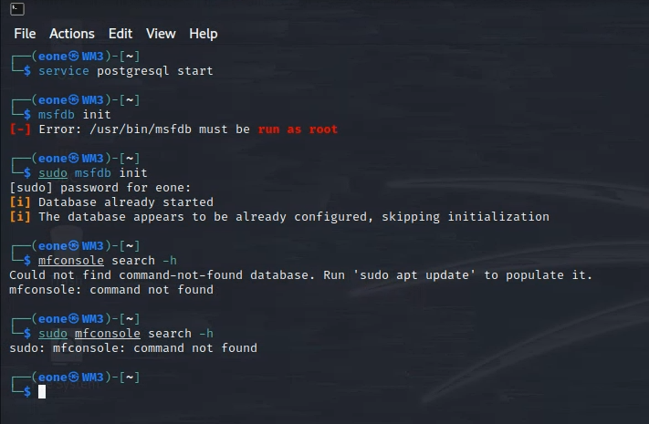
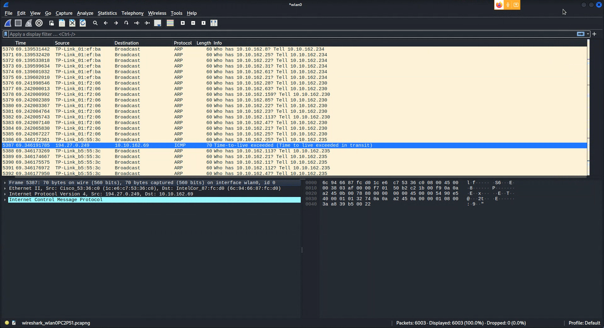
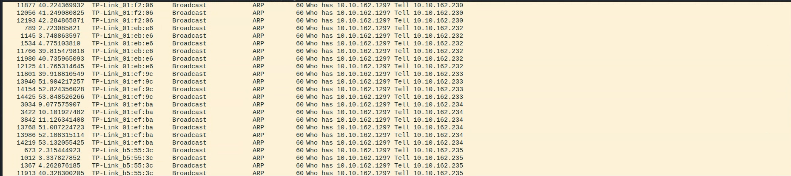
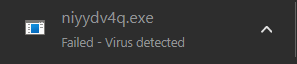

Upon reading the article we understand that the vulnerability discovered by Zimperium zLabs in processing MP3/MP4 media on Android devices was caused by a flaw in the way Android's media processing library handled certain metadata tags in MP3 and MP4 files. Specifically, the vulnerability was due to a buffer overflow error that could be triggered when processing certain metadata tags.
When exploited, this vulnerability could allow an attacker to execute arbitrary code on the affected device. This means that an attacker could potentially take control of the device, steal data, or perform other malicious actions.
The impact of this vulnerability on media files is that a specially crafted MP3 or MP4 file could be used to trigger the buffer overflow error and execute the attacker's code. This could happen when the user downloads or streams a malicious media file, or when an app on the device processes a malicious media file.
It's important to note that this vulnerability was patched by Google in the Android Open Source Project (AOSP) in July 2021, and device manufacturers were provided with the necessary updates to protect their users. Therefore, it is recommended that Android users keep their devices up to date with the latest security patches to protect themselves from potential attacks.
After following the instructions we are met with this error:
I tried using the sudo command to get it to work but seems to not be functional, we will try again this time while we open metasploit:
However we still get the same error, my undestanding is this command has been updated but since the goal of the practice is not obvious this will be the end of this experiment.
This experiment asks us to open a file called reconnainssance.pcapng, however in both my kali version of wireshark or windows version there is no such file, my understanding is that this file is made by someone already in a specific version of kali that i do not have access to thus im missing the context and the actual file i need to continue this experiment, this will be the end of this experiment.
This exercise asks us to use windows defender, currently there is no such thing in windows since it's been renamed to windows security, the plan of this exercise is to try and see how the default anti-virus software will behave if we actually allow a threat in our computer, however since i am using the newest version of windows in both my personal computers (Windows 11 build 22H2) there has been a new feature called CORE-ISOLATION which does not allow me to do this, as the system itself will never allow even the admin to try and load a malware into the system, the results always lead to the file being deleted instantly
As the time of writing this there has been no workaround to 100% disable this, on the other hand my personal computer is being used as a server for a few of my own side projects and i wouldn't be too happy with disabling this anyways!
one work around that comes to mind is using a VM version of an older version of windows but since The purpose of the DOS EICAR test file is to ensure that antivirus software is working properly and can detect viruses effectively, we can say that windows security is doing it's job just perfectly!
We are going to use Wireshark to analyze protocals, after following the instructions we get:
It's important to note that i couldn't resolve a ping to 10.0.0.1 as it kept getting timed out, but this experiment shows just how powerful of a tool wireshark is to see all that's coming in and going out of your computer! i can imagine how useful this is in a critical situation where something is wrong and the professionals are trying to fingure out what or where. this ends this experiment.
This experiment uses the same technique as the last experiment, basically capturing and showing us the ongoing or outgoing data in our computer, tho main difference here is we are trying to see if someone is spoofing our IP, we follow the instrucitons and we see that the onlything using our IP is our router at home!
It's very interesting to see so many things happening in the background, all these devices talking to each other to maintain connection while we don't even know it's happening, that ends this experiment.
This experiment wants us to upload a file called trojan_simulator.exe which the exercise thinks we already have in our desktop... we don't have this file, and it has not been provided to us, i believe it's the same with the earlier case, we are missing some context here, anyways i believe that the goal of this was to upload a trojan to a file checker website and see that it actually does detect it and flags it as trojan, with the lack of tile our experiment ends here.
This experiment is also very confusing at the start, it assumes you already have a program called GMER in your downloads folder and provides no links or websites for downloading it, ironic since this is a cybersecurity course and if someone is new to this they could go out there and install an actual virus in their system looking for GMER, anyways after verifying the correct version and isntalling it we get this:
Both the chrome Anti-virus and windows security program flag this program (GMER) as virus and at this point i no longer felt safe running this application in my system as a quick search in the internet has shown me that people say this program is not safe. since the last time it's been updated is 2016 it could be very well altered to achieve a backdoor or something more in the system, this experiment ends here!
This experiment aims to help with SQL injections, and as the steps are correct, for the 3rd time now the paper assumes we have access to something that is not in our system, we also figured this out in class when we tried to replicate it, only the instructor could access it because he had access to a private VM provided by a learning website to practice cybersecurity, i assume that version came with all the things that we are missing since the instructor could access all these things that we couldn't, the paper meantions going to a server from the address : localhost/dvwa
and as you expected that takes us actually nowhere, since this is a local SQL running on the same website that our instructor uses to get access to those course materials and VM machine, this experiment would be technical if we had access to that specifit VM but as of now we don't so this will be the end of this experiment and the end of this topic which was lab activities!
created with
Website Builder Software .